Historia de la Artillería del Perú
"La artillería es el martillo que forja la victoria en el yunque de la batalla."
Orígenes de una Fuerza Inquebrantable
Desde los albores de la independencia, cuando el Perú aún se sacudía de las cadenas coloniales, la artillería comenzó a forjar su leyenda entre el metal y la pólvora.
En aquellos primeros días, las piezas artilleras eran escasas y precarias, pero cada cañón era un símbolo de libertad. Bajo el liderazgo de héroes como Don José de San Martín y Simón Bolívar, se organizó el primer cuerpo de artillería patriota, formado por hombres que aprendieron, entre el humo y el estruendo, a escribir con fuego el destino de la nueva nación.
No fue fácil. La falta de materiales, de entrenamiento y de experiencia obligaba a los artilleros peruanos a suplir con valor lo que no tenían en recursos. Sin embargo, en cada disparo resonaba la voluntad de un pueblo decidido a ser libre. Así nació la artillería peruana: humilde en sus inicios, pero inquebrantable en su espíritu.
El Combate del 2 de Mayo de 1866
El 2 de mayo de 1866, el puerto del Callao se convirtió en el altar del coraje artillero.
Frente a la amenaza de la escuadra española, que buscaba someter nuevamente a la nación independiente, los artilleros peruanos se apostaron en las fortalezas y baterías costeras. Desde la emblemática Torre La Merced, pasando por los reductos de Santa Rosa y Ayacucho, las bocas de fuego artillero escupieron su respuesta: la defensa inquebrantable de la patria.
Durante horas interminables, el cielo se cubrió de humo, metralla y fuego. La artillería peruana, a pesar de su desventaja en número y potencia, mantuvo su posición, desbarató ataques y causó serios daños a las naves enemigas. La retirada de la flota española selló una de las victorias más emblemáticas de la historia nacional. En el Callao, no solo se defendió un puerto: se defendió la dignidad de un país.
El estruendo de los cañones aquel día no se disipó en el viento: se inscribió para siempre en el alma del Perú.
La Guerra del Pacífico
Cuando en 1879 estalló el conflicto con Chile, la artillería peruana volvió a ser llamada a la historia.
Desde las trincheras de Arica hasta los campos de San Juan y Miraflores, los artilleros resistieron con fiereza. Piezas fijas y móviles, emplazadas en terrenos inhóspitos y frente a enemigos mejor equipados, buscaron cada oportunidad para hacer sentir su fuego devastador.
En Arica, el legendario Morro fue defendido no solo por el coraje de sus soldados, sino también por los cañones que resistieron hasta su último disparo. En San Juan y Miraflores, aunque la marea de la guerra fue adversa, la artillería peruana luchó hasta agotar sus municiones, demostrando que su espíritu era más fuerte que cualquier adversidad.
La Guerra del Pacífico dejó heridas profundas en la nación, pero también elevó a la artillería como símbolo de resistencia y lealtad incondicional al deber.
Siglo XX: Renovación y Saber Técnico
Después de la guerra, comenzó un largo proceso de reconstrucción y modernización.
A medida que el mundo militar evolucionaba, el Perú entendió que el futuro de la artillería no estaba solamente en la fuerza bruta, sino en la precisión, el estudio y la ciencia.
Durante el siglo XX, se modernizaron los cañones, se crearon escuelas de artillería, se incorporaron estudios de balística, topografía y cálculo de tiro. La artillería dejó de ser solo fuerza: se transformó en inteligencia operativa.
Las piezas autopropulsadas, los obuses de largo alcance y los nuevos sistemas de control de fuego colocaron a la artillería peruana a la par de las exigencias modernas, lista para defender la soberanía nacional en cualquier terreno y circunstancia.
El artillero del siglo XX no era solo un guerrero: era un especialista, un científico de la guerra, un custodio del fuego racionalizado.
La Artillería en el Siglo XXI
Hoy, la artillería peruana es una fuerza moderna, precisa y tecnificada.
Se emplean sistemas de tiro computarizados, softwares de balística avanzada y plataformas digitales de comando y control que permiten coordinar fuegos con exactitud milimétrica.
Además, el uso de UAVs (vehículos aéreos no tripulados) proporciona inteligencia en tiempo real, facilita la adquisición de objetivos y permite corregir los fuegos con una altísima precisión.
La artillería combina ahora la fuerza tradicional con la tecnología moderna, asegurando que cada disparo sea un golpe certero en favor de la victoria.


 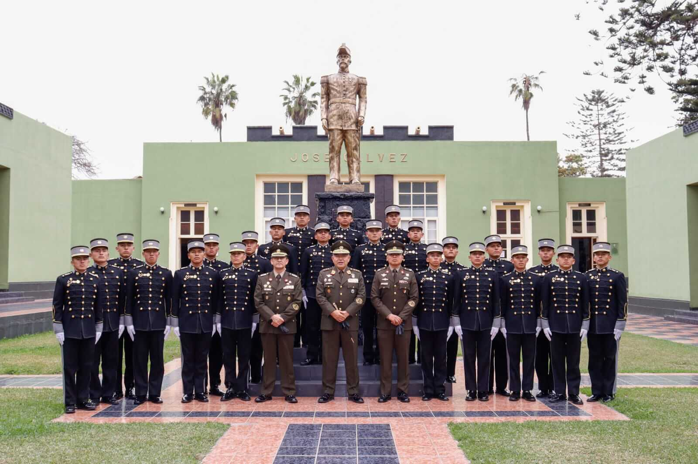
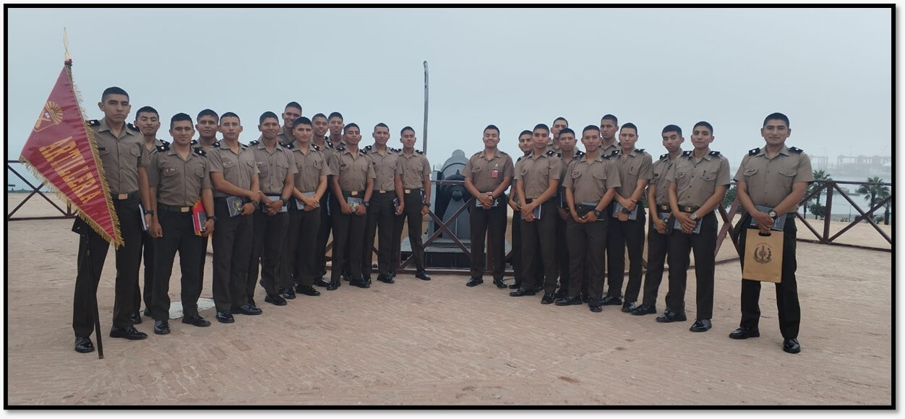
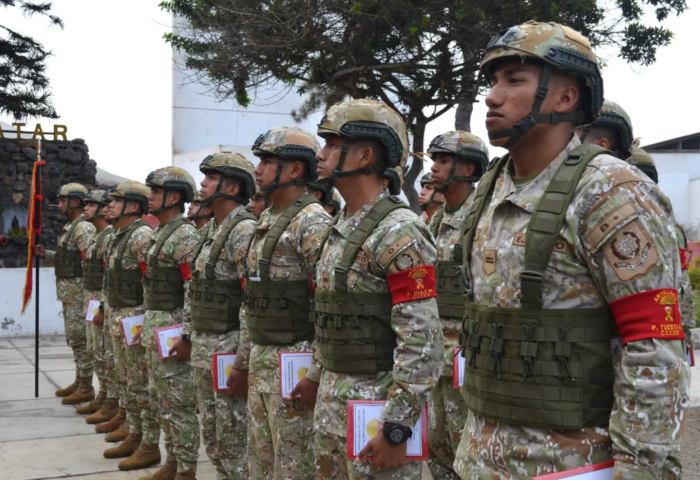
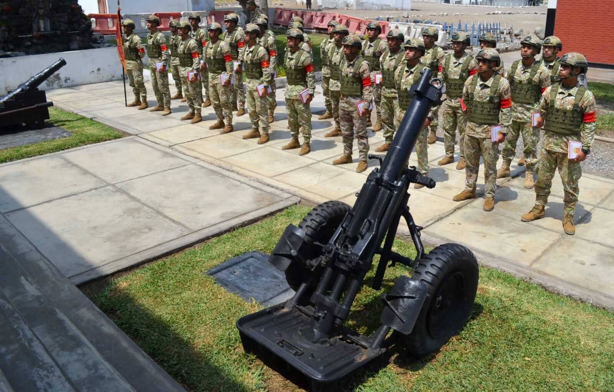
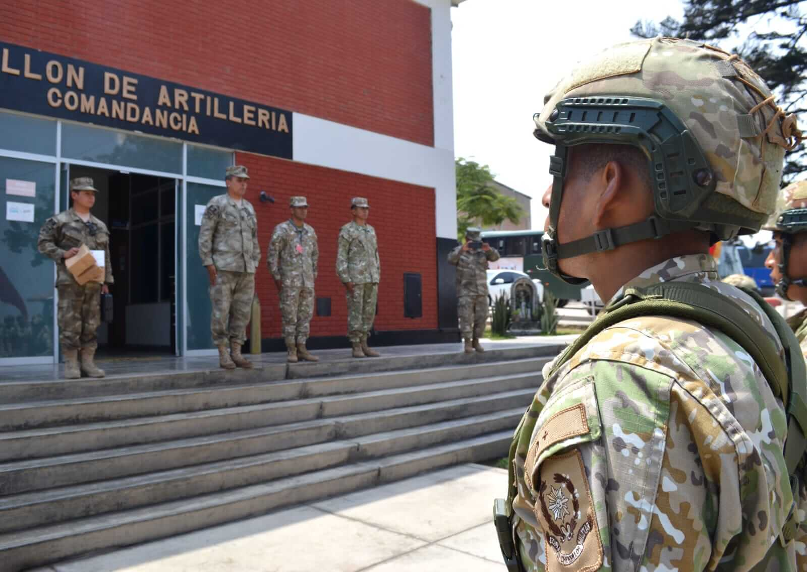
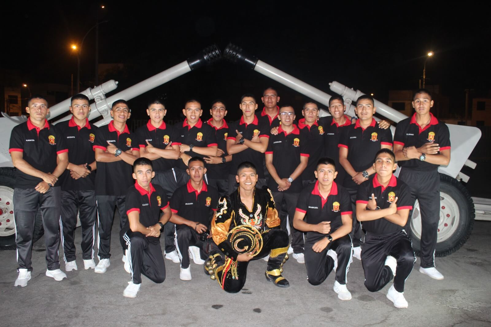
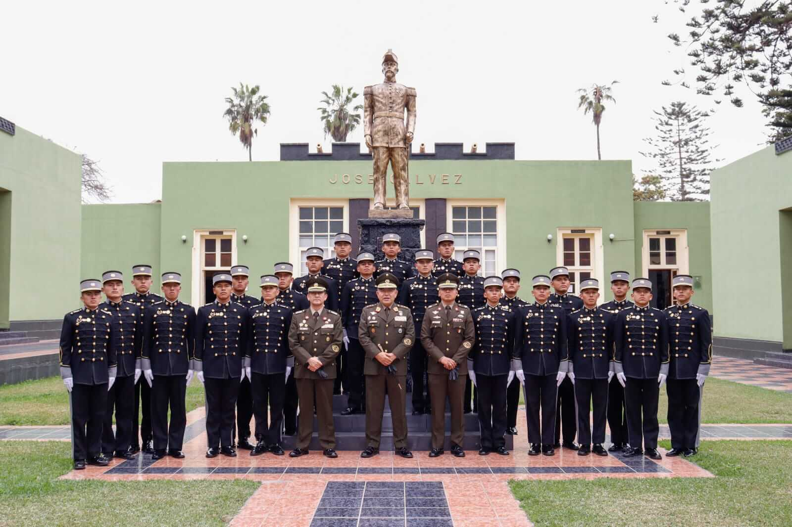
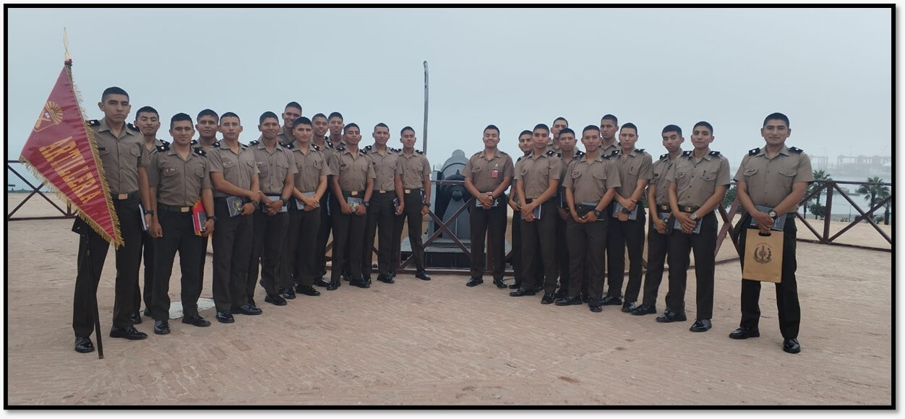
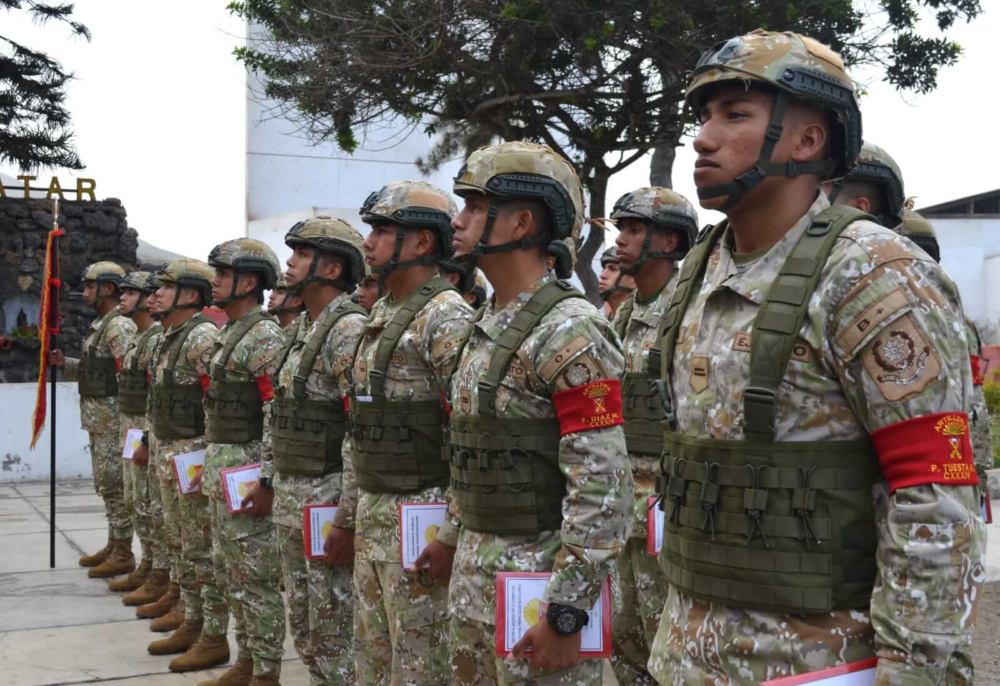
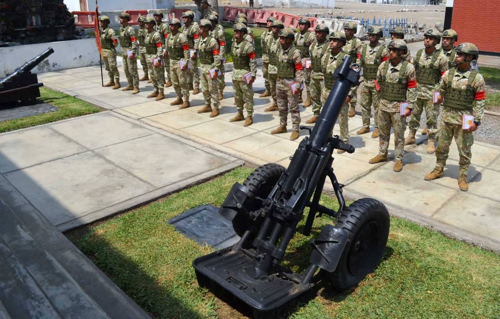
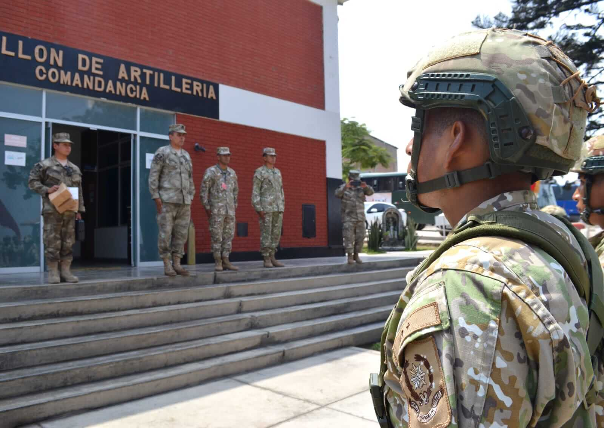
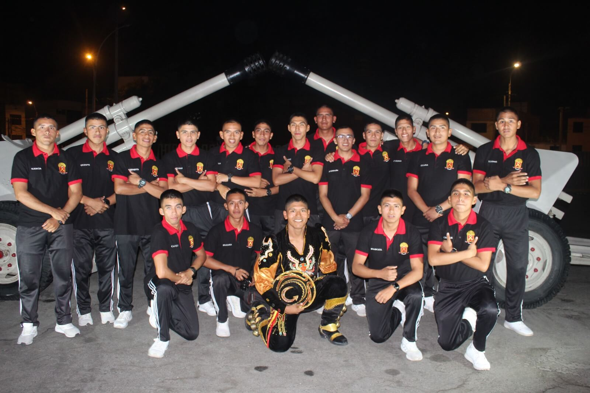